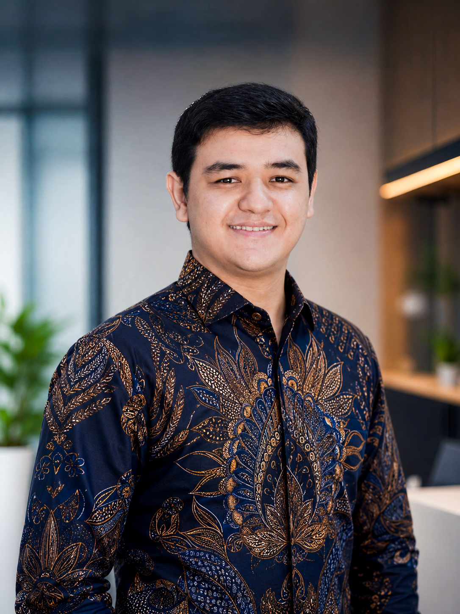

BANK MANDIRI 01
APDBond TradeIn Progress
Dalam pengembangan
Perbankan / Pengalaman profesional
Bond Trade System
In ProgressProyek pengelolaan dan perdagangan obligasi di APD Group, Bank Mandiri. Saat ini masih dalam pengembangan.
SOLUTION ANALYST / BANK MANDIRI
Halo, saya Ahmad Romiz.
Solution Analyst di Bank Mandiri, saat ini di APD Group mengerjakan Bond Trade System. Sebelumnya mendukung proyek Livin’ Merchant dan Livin’ Food di SME, dengan latar belakang backend, otomasi, dan data engineering.

Solution Analysis ✳ Backend Engineering ✳ Workflow Automation ✳ Data & ETL
01 / KARYA TERPILIH
Di balik setiap proyek, ada proses yang ingin dibuat lebih baik. Klik untuk membaca ceritanya.
Perbankan / Pengalaman profesional
Proyek pengelolaan dan perdagangan obligasi di APD Group, Bank Mandiri. Saat ini masih dalam pengembangan.
Perbankan / Pengalaman profesional
Pengalaman proyek Livin’ Merchant sebagai Solution Analyst di IT Digital SME Channel Delivery, Bank Mandiri.
Perbankan / Pengalaman profesional
Pengalaman proyek Livin’ Food dalam penugasan Solution Analyst di tim SME, Bank Mandiri.
Otomasi
Dari workbook rekonsiliasi ke jurnal per partner, lengkap dengan validasi dan pelacakan job.
Data & ETL
Pipeline multi-sumber yang mengubah data operasional menjadi warehouse dan reporting marts.
Data & ETL
Tiga dokumen operasional penerbangan direkonsiliasi menjadi satu record siap spreadsheet.
Web & Sistem
Membangun ulang website dan CMS agar lebih mudah dikelola serta dirawat.
Web & Sistem
Shortlink, generator QR, dan analitik akses untuk kebutuhan internal perusahaan.
Otomasi
Otomasi pengecekan kesehatan sistem, backup terjadwal, dan tugas operasional berulang.
Belum ada proyek untuk kombinasi filter ini. Coba hapus filter.
02 / DI BALIK LAYAR
Saya bekerja sebagai Solution Analyst di Bank Mandiri, dengan pengalaman di IT Digital SME Channel Delivery dan kini di IT Wholesale Banking Development — APD Group. Fokus proyek saat ini adalah Bond Trade System yang masih dalam pengembangan.
Latar belakang saya mencakup backend, otomasi operasional, dan pipeline data. Pengalaman ini membentuk pendekatan saya dalam memahami kebutuhan dan menyusun solusi sistem. Melalui Zentro, saya juga mengembangkan solusi digital untuk kebutuhan bisnis.
Baca catatan implementasi ↗PERANGKAT KERJA
Pilih teknologi untuk melihat proyek terkait.
03 / PERJALANAN PROFESIONAL
Okt 2026 — Sekarang
PT Bank Mandiri (Persero) Tbk. · APD Group
Mendukung proyek Bond Trade System untuk pengelolaan dan perdagangan obligasi di IT Application Delivery (APD) Group. Status proyek: In Progress.
Jul 2026 — Okt 2026
PT Bank Mandiri (Persero) Tbk. · SME
Mendukung proyek Livin’ Merchant dan Livin’ Food sebagai Solution Analyst di IT Digital SME Channel Delivery Department.
Jul 2024 — 2026
PT Pelita Air Service · Jakarta
Otomasi backend dan monitoring, pengolahan data operasional dan keuangan, validasi serta rekonsiliasi, dan sinkronisasi data lintas sistem berbasis SQL.
Jun 2023 — Jun 2024
PT Pelita Air Service · Jakarta
Pengembangan sistem internal dengan Python, PHP, dan SQL, serta otomasi backup, monitoring, reporting, dan pemeliharaan operasional.
Jan 2022 — Apr 2023
Bosiz Ngoding · Remote
Pengajaran dasar pemrograman Python, C++, HTML, CSS, Ruby, dan Ruby on Rails dengan materi serta latihan berbasis proyek.
04 / MULAI PERCAKAPAN
Ceritakan kebutuhan Anda. Mari petakan solusi yang masuk akal, dari website sampai otomasi operasional.
Untuk percakapan profesional seputar solution analysis, backend, otomasi, dan data engineering.